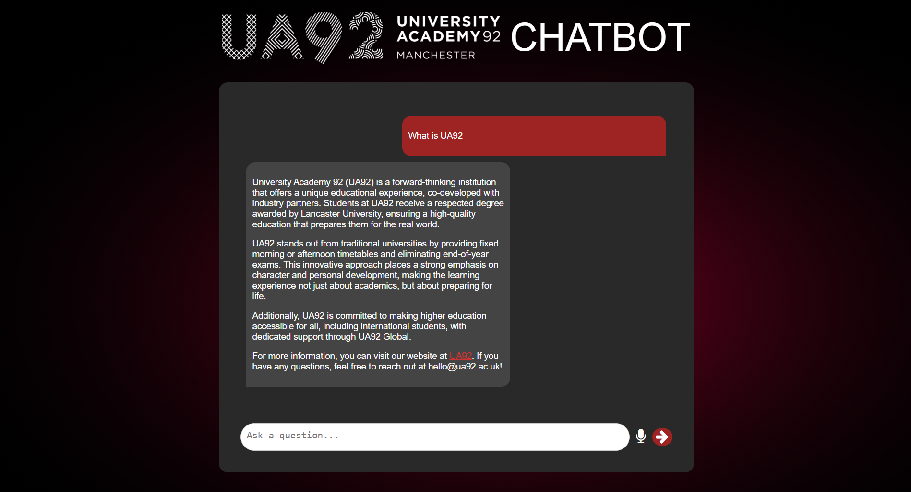
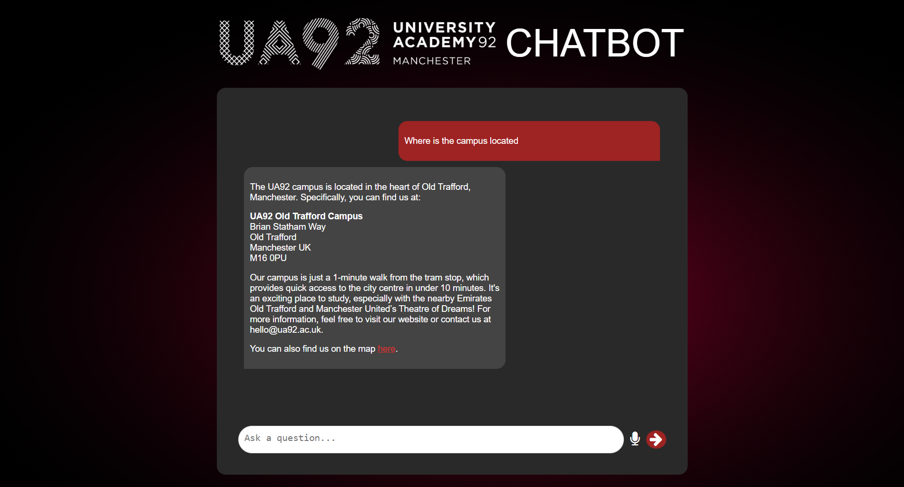

Web Scraper RAG Chatbot
-
 JavaScript
JavaScript
-
 Python
Python
-
 HTML
HTML
-
 CSS
CSS
-
 LangChain
LangChain
RAG Chatbot that uses web scraping for data gathering.
UA92 Admissions Chatbot
A Retrieval-Augmented Generation (RAG) chatbot designed to assist users with University Academy 92 (UA92) admissions-related queries.
This project uses LangChain, GPT-4o-Mini, and ChromaDB to deliver accurate responses based on scraped university website data.
The underlying system is adaptable and can be repurposed to build chatbots for any public website with structured information.
🚀 Features
- 🔍 RAG with GPT-4o-Mini & ChromaDB
- 🗂️ Context-aware, semantically accurate answers
- 🌐 Multilingual support
- 🎤 Voice input (English only)
- 📱 Mobile-friendly, accessible UI
- 📊 97% accuracy in user testing

